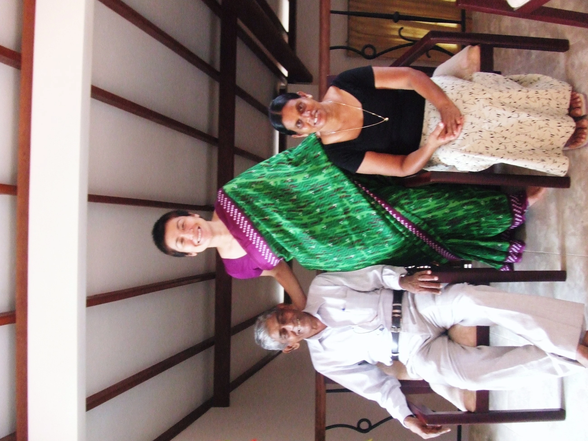
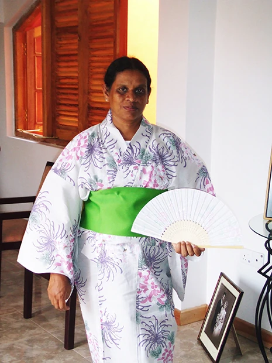
「スリランカに興味があり、アーユルベーダや自然と共存の中で様々な体験ができそうなのと、料金が高額でなかったので、この留学プログラムに参加を決めました。
英語レッスンは、優しく丁寧な先生で、先生の人柄・人間性がすばらしかったです。 私の希望は多くのアクティビィティの中で学びたいということだったので、本当に興味深い会話を学ぶことが出来ました。
スリランカのホームステイは、何ともいえない安らぎの体験でした。ホストファミリーとは本当の家族のような気分で生活をしていました。
スリランカのTata！（お父さん！）Anma！（お母さん！）私を娘のような気持ちで接してくれました。
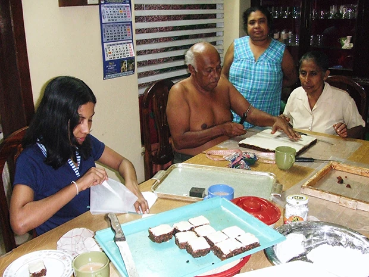
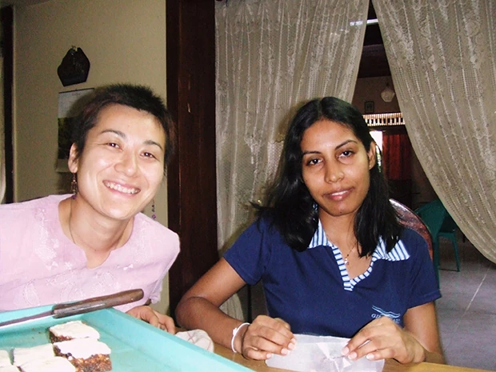
こんなに優しく温かい人に囲まれて幸せでした。別れが近づくにつれて、心から寂しさが募り、たった３週間の間に、一生心に残る関係が築けたと思っています。
ホストマザーは、具合の悪い時、優しく看病してくれ、寝る時も一緒でした。
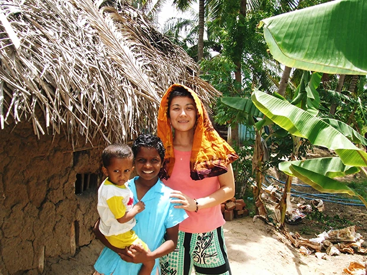
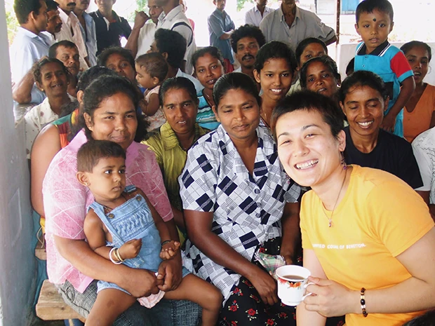
低開発村に視察に行き、村の生活、そしてたくさんの可能性、私も何か協力したい気持ちになりました。笑顔が輝く人達の村、このまま少しずつ発展していってもらいたいです。
全てがリサイクル！無駄のない生活だと思いました。本当に素晴らしい体験でした！ 水浴び（well water）大好きです。
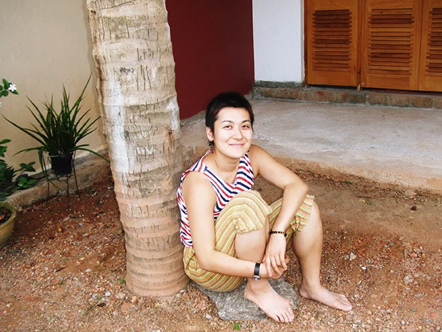
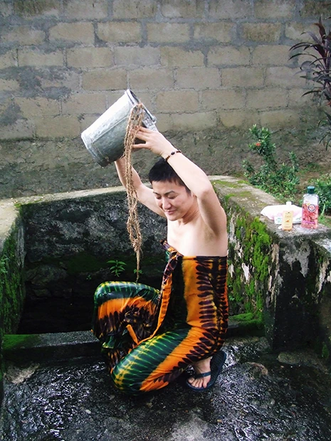
初めは「この小さな国で何が待っているのだろう？」と想像がつきませんでした。 しかし！なんと優しく心地良い国なのか！ 私はいつも深呼吸している感じでした。
私は今回たくさんの経験をしました。 そしてデング熱まで！！
次回は蚊の対策を強化していきたいです。
でもスリランカで設備の整ったApollo病院に入れたので良かったです。
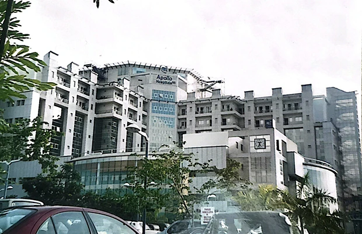
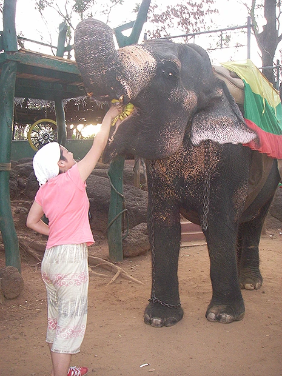
是非、またスリランカへ行きたいです。
そして、アーユルヴェーダ、ダンス、癒しの活動、たくさんの勉強と活動を行いたいです。
またこの留学プログラムに参加する予定です！
今回の経験は私の人生の中で、本当に輝くものとなりました。
スリランカで心の豊かさ、広さを学びました。私のAnma（お母さん）は、いつも「Never mind, just flying bird!」と言ってました。今の日本人に必要なのはこれだと思います。
そして人を思うこと、スリランカの風を感じたくなったらまた私は行くと思います。
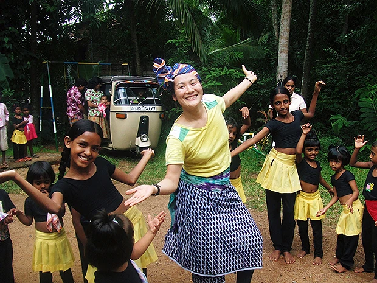
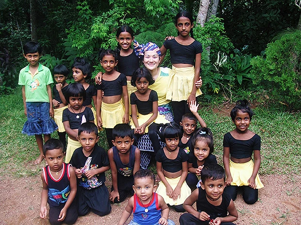
たくさんの人にこのプログラムに参加して欲しいと思います。 若い人はもちろんですが、特に元気の良いシニアの方々にも是非参加していただきたいと思います。
逢坂さんの親切丁寧な対応に感謝しています。電話またメールで細かい説明をしていただけて大変助かりました。
Beインターナショナル、現地受入団体の方は本当に親切な方ばかりで、急な要望にもいつも気持ち良く対応してくれ、感謝の気持ちでいっぱいです。
（現地受入団体の）マーネルの人脈・情報量・発想がとにかくコーディネーターとしても人としても最高でした。逢坂さんを初め、現地受入団体のスタッフの皆さま、そしてホームステイの両親に深く感謝します。」
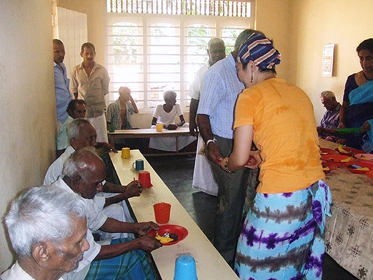